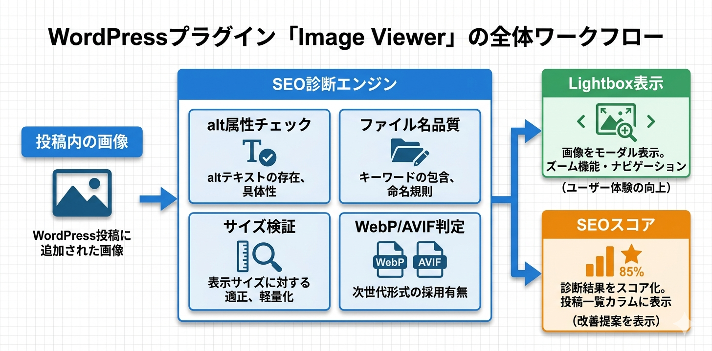

Kashiwazaki SEO Image Viewer マニュアル
WordPress投稿内の画像をLightbox表示し、画像SEO診断（alt属性・ファイル名・サイズ・次世代フォーマット対応）を自動実行するプラグインです。投稿ごとの画像SEOスコアを算出し、管理画面カラムで確認・ソートできます。
本プラグインはフロントエンドにLightbox画像ビューアーを提供するとともに、管理画面で画像SEOの診断結果とスコアを表示します。JSON-LDやmetaタグの出力は行いません。フロントエンド出力: CSS 24KB、JS 36KB。
主要機能
Lightbox表示
画像クリックでズーム・ナビゲーション付きのLightboxを表示
SEO診断
alt属性・ファイル名・サイズ・次世代フォーマット対応を自動チェック
スコア表示
投稿ごとの画像SEOスコアを算出し管理画面カラムに表示

目次
- 概要 - プラグインの概要と主要機能の紹介
- インストール・初期設定 - インストール手順と初期設定の方法
- 画像ビューアー・SEO診断 - Lightbox表示と画像SEO診断の使い方
- トラブルシューティング - よくある問題と解決方法
SEO / GEO における強み
本プラグインはJSON-LDやmetaタグの出力は行いませんが、画像SEO診断を通じて、SEOおよびGEO（Generative Engine Optimization）の改善に役立つ情報を提供します。
画像SEO診断によるSEO改善
画像SEO診断は、alt属性の欠落を検出します。alt属性はアクセシビリティと画像検索の両面で重要な要素であり、未設定の画像を素早く特定して対策の優先順位を判断できます。
ファイル名品質の評価
画像ファイル名の品質は画像検索のランキングに影響します。本プラグインはファイル名が適切なキーワードを含んでいるか、意味のある名前になっているかを診断し、改善を促します。
次世代フォーマットの検出
WebP/AVIF形式の検出により、次世代画像フォーマットへの対応状況を把握できます。次世代フォーマットの採用はページ読み込み速度の向上に貢献し、Core Web Vitalsの改善につながります。
GEOへの応用可能性
GEO（Generative Engine Optimization）の観点では、AIは画像のalt属性を参照して画像の内容を理解します。適切なalt属性の設定は、AI引用における画像コンテンツの正確な把握に貢献します。画像SEOスコアにより最適化の優先順位を効率的に判断できます。
動作要件
- WordPress 6.0 以上
- PHP 7.4 以上